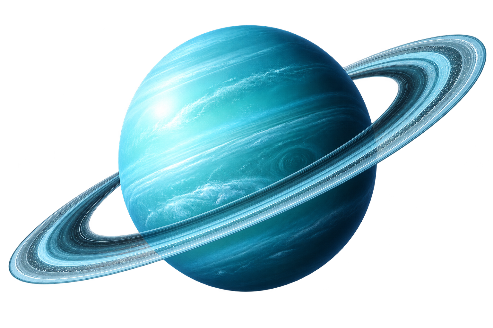

01
Urano foi o primeiro planeta descoberto com um telescópio em 1781.
Um gigante gelado inclinado de lado, com uma atmosfera azulada e ventos poderosos.
← Voltar ao Sistema Solar
Urano é um planeta gasoso com coloração azul-verde devido ao metano e gira com o eixo quase paralelo ao plano orbital.
Compare a duração do dia em Urano com outros planetas do Sistema Solar.
Urano completa um dia em cerca de 17 horas, o que ainda é mais curto que a maioria dos gigantes gasosos.
Urano gira praticamente de lado, o que causa estações extremas ao longo de sua órbita.
Seu corpo é composto por hidrogênio, hélio e gelo de água, amônia e metano.
Urano é rico em compostos congelados, como água, amônia e metano.
Os ventos em Urano podem chegar a 900 km/h.
Urano é um dos planetas mais frios do Sistema Solar, com temperaturas abaixo de -200°C.
Urano foi o primeiro planeta descoberto com um telescópio em 1781.
Sua cor azul é causada pelo metano que absorve luz vermelha.
Urano tem 13 anéis tênues e pouco visíveis.